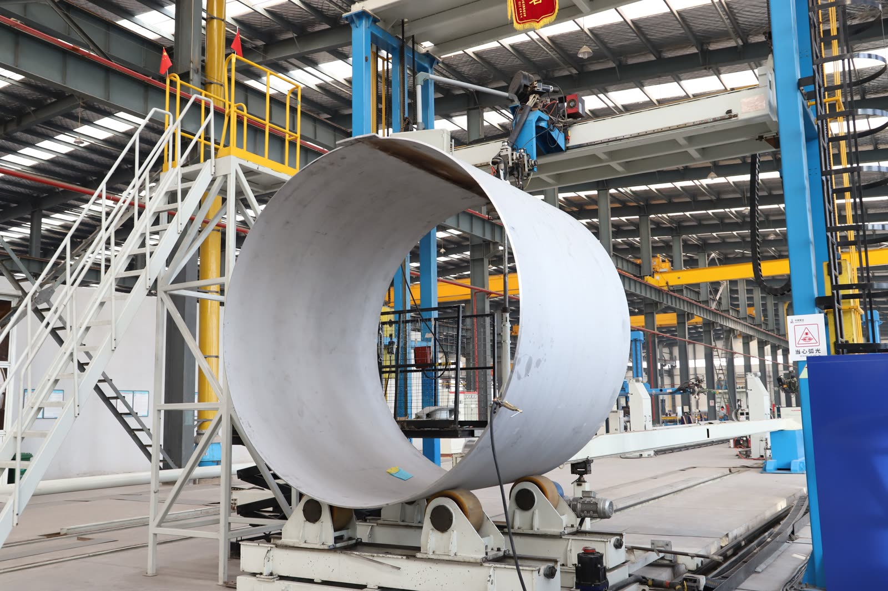

HYPERSCALE / ABOUT
About.
Hyperscale provides industrial fabrication, construction, and maintenance services for critical facilities nationwide. Our work is guided by experienced leadership, disciplined execution, skilled craftsmanship, and direct accountability.

Company Overview
Industrial Experience
We support data centers, oil refineries, power generation facilities, manufacturing operations, and other demanding industrial environments where safety, quality, schedule control, and dependable performance are essential.
Our teams coordinate planning, procurement, fabrication, field construction, maintenance, and project turnover.
Our People
Leadership & Workforce
Experienced project leaders, supervisors, safety professionals, quality personnel, and skilled craft workers bring practical knowledge and personal ownership to each assignment.
Clear expectations, open communication, and field-level accountability keep teams aligned with client requirements.
Operating Principles
Safety. Quality. Integrity.
We protect our people, meet the requirements of the work, communicate honestly, and take responsibility for our results. These principles guide our decisions and client relationships.
National Capability
Nationwide Project Support
Hyperscale supports projects across the country with flexible teams, consistent operating standards, and resources for complex industrial work.